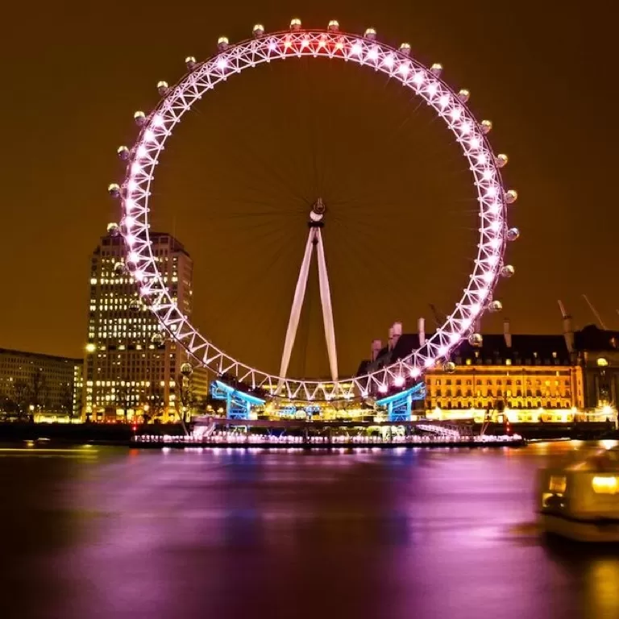
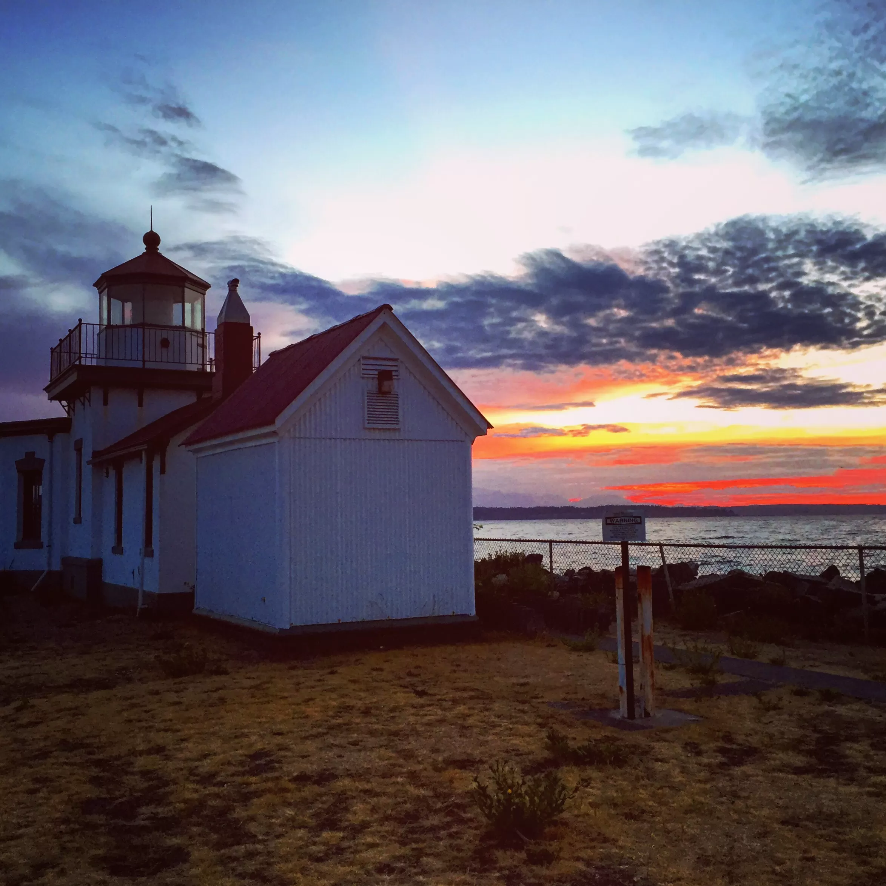

<ion-header>

    <ion-navbar>
        <ion-title>My Places</ion-title>
    </ion-navbar>

</ion-header>

<ion-content class="card-background-page">

    <ion-card>
        
        <div class="card-title">Montreal</div>
    </ion-card>

    <ion-card>
        
        <div class="card-title">London</div>
    </ion-card>

    <ion-card>
        
        <div class="card-title">Chicago</div>
    </ion-card>

    <ion-card>
        
        <div class="card-title">Seattle</div>
    </ion-card>

</ion-content>

<div style="display: flex; flex: 1; justify-content: center" class="addPlaceButton">
    <button ion-button outline icon-left small (click)="presentPlacesChooserModal();">
        <ion-icon name="add-circle"></ion-icon>
        Add a place
    </button>
</div>